Activity: Assembly features
An Assembly Cutout allows you to cut multiple parts within the assembly environment. The resultant cutout can be applied only in the assembly (Assembly Feature) or it can be associatively linked back to the part or sheet metal files (Assembly-Driven Part Feature). This capability reduces the chance of error through misalignment that could happen when through holes spanning multiple parts are cut independently.
Objectives
Learn to use the Assembly Cutout command. Assembly Cutout places a cutout in multiple parts from within the Assembly environment. To do this, draw a sketch on one of the assembly reference planes, and then select the parts to cut. For this activity, construct an Assembly Feature Cutout in the assembly as shown in the following illustration.
Click here to download the activity file.

Browse for assembly_cut.asm.
In the Open File dialog box, set the Assembly open as to Small Assembly. Click More, and select the Inactivate all option. Turn shading on or off as preferred.
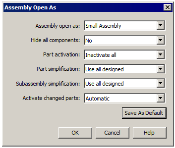
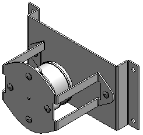
-
On the File menu, click Settings→Options. In the Solid Edge Options dialog box, click the Inter-Part tab. Check all the boxes and then click OK.
-
Activate the files baseplate.psm, motormount.psm, and motor.par. Select the three parts by holding down the Ctrl key. Right-click to display the shortcut menu, and then click Activate.
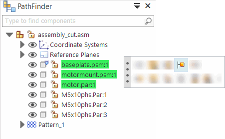
-
Turn on the display of the x-z plane. In PathFinder, click the check boxes for the x-z plane and the Reference Planes.
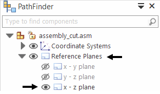
On the Features tab, in the Assembly Features group, choose the Cut command .
In the Assembly Feature Options dialog box, select the Create Assembly features option and click OK.
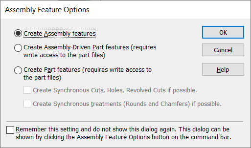
Select the assembly reference plane as shown.
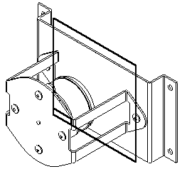
On the Home tab, in the Draw group, choose the Project to Sketch command . In the Project to Sketch Options dialog box, select the options shown and click OK.

Select the circle on the motor.
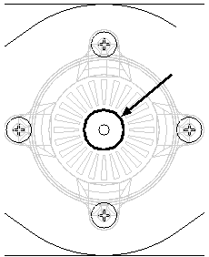
Click the Accept button.
Type 15 for the offset distance and then click to the outside direction of the selected circle. Choose Close Sketch.
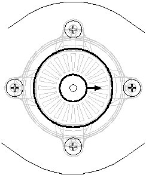
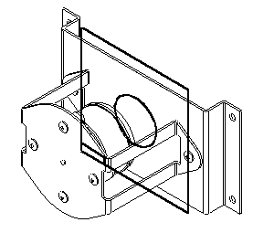
On the command bar, click the Through All extent option. Position the cursor so the arrow points in the direction as shown, and click to accept.
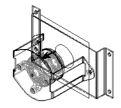
Click the Deselect button to deselect the parts highlighted in PathFinder. These are all the parts that the cutout affects.
In PathFinder, select the files baseplate.psm (A) and motormount.psm (B) for the parts to cut. Click the Accept button, and then click Finish. Both cutouts, driven by the circle, are placed in the assembly only.
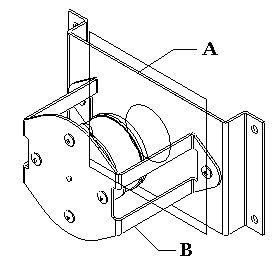
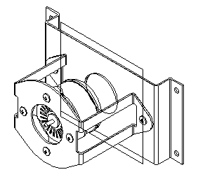
-
Click the Select Tool. Right-click in the working window to display the shortcut menu, and then choose the Show/Hide All Components command. In the Show All/Hide All dialog box, check the Hide All box for Reference Planes and click OK.
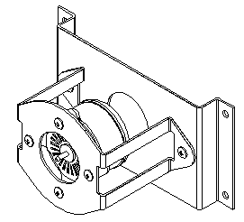
Observe the changes in PathFinder. Since the Create Assembly features option was selected, the cutout is shown as an Assembly Feature. This feature only exists within the assembly did not modify the parts that were selected.
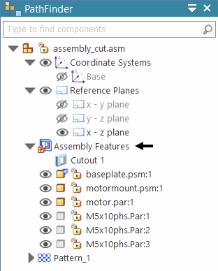
If the Create Assembly-Driven Part Features option was selected, then PathFinder would show the following. Assembly-Driven Part Features create an associate linked feature within the part. You must have write access to the part to create an Assembly-Driven Feature.
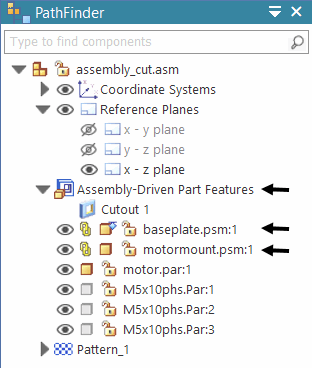
baseplate.psm and motormount.psm are now shown as associatively linked to the assembly sketch. The baseplate.psm and motormount.psm files are actually modified by the cutouts. Investigate this by saving and closing this file. Then open either baseplate.psm or motormount.psm to verify the modification.
If the Create Part features option was selected, the cutout would reside in the part file as if it was created there rather than in the assembly.
Save and close the assembly. This activity is complete.
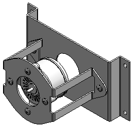
An Assembly Cutout can be applied in the assembly only (Assembly Feature) or the cutout can be applied directly to the part or sheet metal files (Assembly-DrivenPart Feature). This activity only covered the assembly feature cutout option. You can go back later and use the Assembly-DrivenPart Feature cutout option to observe how the part files have cutouts applied directly to them.
Click the Close button in the upper-right corner of the activity window.
Answer the following questions:
-
What is the difference between an Assembly Feature and an Assembly Driven Part Feature?
-
Can an Assembly Feature, such as a Cutout, operate on more than one assembly component?
-
How are Assembly Features displayed in a Draft document?
-
Are Assembly Features valid when the assembly is placed as a subassembly?
-
What is the difference between an assembly feature and an assembly driven part feature?
An assembly feature only exists within the assembly environment and does not add the feature to the part or sheet metal document. Other occurrences of those parts in other assemblies are not affected by the assembly feature.
An assembly driven part feature creates a linked feature in the part or sheet metal file and all occurrences of that part or sheet metal document, including other assemblies, are modified with that feature.
-
Can an assembly feature, such as a cutout, operate on more than one assembly component?
Components to which an assembly feature is applied to are selected prior to placing the feature.
-
How are assembly features displayed in a draft document?
When constructing drawings of an assembly that contain assembly features, you can specify whether the assembly features are displayed in a drawing view using the Drawing View Properties dialog box. This applies only to assembly features, not assembly-driven part features. Because assembly-driven part features physically modify the part document, they are always displayed in a drawing view.
-
Are assembly features valid when the assembly is placed as a subassembly?
Both assembly features and assembly-driven part features are viewable and can be used for positioning purposes when the assembly is placed as a subassembly in another assembly.